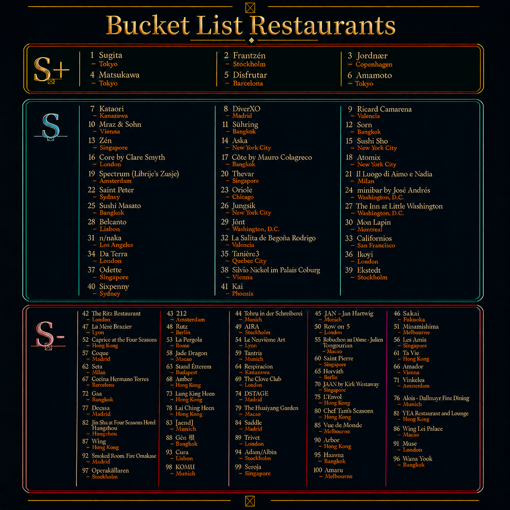

1
Hover to reveal a hotspot. Click any restaurant area to open its Google Maps page.

#1 Sugita — Tokyo#2 Frantzén — Stockholm#3 Jordnær — Copenhagen#4 Matsukawa — Tokyo#5 Disfrutar — Barcelona#6 Amamoto — Tokyo#7 Kataori — Kanazawa#8 DiverXO — Madrid#9 Ricard Camarena — Valencia#10 Mraz & Sohn — Vienna#11 Sühring — Bangkok#12 Sorn — Bangkok#13 Zén — Singapore#14 Aska — New York City#15 Sushi Sho — New York City#16 Core by Clare Smyth — London#17 Côte by Mauro Colagreco — Bangkok#18 Atomix — New York City#19 Spectrum (Librije’s Zusje) — Amsterdam#20 Thevar — Singapore#21 Il Luogo di Aimo e Nadia — Milan#22 Saint Peter — Sydney#23 Oriole — Chicago#24 minibar by José Andrés — Washington, D.C.#25 Sushi Masato — Bangkok#26 Jungsik — New York City#27 The Inn at Little Washington — Washington, D.C.#28 Belcanto — Lisbon#29 Jônt — Washington, D.C.#30 Mon Lapin — Montreal#31 n/naka — Los Angeles#32 La Salita de Begoña Rodrigo — Valencia#33 Californios — San Francisco#34 Da Terra — London#35 Tanière3 — Quebec City#36 Ikoyi — London#37 Odette — Singapore#38 Silvio Nickol im Palais Coburg — Vienna#39 Ekstedt — Stockholm#40 Sixpenny — Sydney#41 Kai — Phoenix#42 The Ritz Restaurant — London#43 212 — Amsterdam#44 Tohru in der Schreiberei — Munich#45 JAN - Jan Hartwig — Munich#46 Sakai — Fukuoka#47 La Mère Brazier — Lyon#48 Rutz — Berlin#49 AIRA — Stockholm#50 Row on 5 — London#51 Minamishima — Melbourne#52 Caprice at the Four Seasons — Hong Kong#53 La Pergola — Rome#54 Le Neuvième Art — Lyon#55 Robuchon au Dôme - Julien Tongourian — Macau#56 Les Amis — Singapore#57 Coque — Madrid#58 Jade Dragon — Macau#59 Tantris — Munich#60 Saint Pierre — Singapore#61 Ta Vie — Hong Kong#62 Seta — Milan#63 Stand Étterem — Budapest#64 Respiration — Kanazawa#65 Horváth — Berlin#66 Amador — Vienna#67 Cocina Hermanos Torres — Barcelona#68 Amber — Hong Kong#69 The Clove Club — London#70 JAAN by Kirk Westaway — Singapore#71 Vinkeles — Amsterdam#72 Gaa — Bangkok#73 Lung King Heen — Hong Kong#74 DSTAgE — Madrid#75 L’Envol — Hong Kong#76 Alois - Dallmayr Fine Dining — Munich#77 Deessa — Madrid#78 Lai Ching Heen — Hong Kong#79 The Huaiyang Garden — Macau#80 Chef Tam's Seasons — Hong Kong#81 YEA Restaurant and Lounge — Hong Kong#82 Jin Sha at Four Seasons Hotel Hangzhou — Hangzhou#83 [aend] — Munich#84 Saddle — Madrid#85 Vue de Monde — Melbourne#86 Wing Lei Palace — Macau#87 Wing — Hong Kong#88 Gēn 根 — Bangkok#89 Trivet — London#90 Arbor — Hong Kong#91 Muse — London#92 Smoked Room, Fire Omakase — Madrid#93 Cura — Lisbon#94 Adam/Albin — Stockholm#95 Haawm — Bangkok#96 Wana Yook — Bangkok#97 Operakällaren — Stockholm#98 KOMU — Munich#99 Seroja — Singapore#100 Amaru — MelbourneEach entry has Google Maps plus exact website, reservation, Michelin, and Instagram links when those pages are available.
Group the list by city so it is easier to plan destination-based trips.
Japan • Asia • 13 restaurants
United Kingdom • Europe • 12 restaurants
Hong Kong • Asia • 11 restaurants
France • Europe • 11 restaurants
Thailand • Asia • 9 restaurants
Singapore • Asia • 8 restaurants
Denmark • Europe • 6 restaurants
Spain • Europe • 6 restaurants
United States • North America • 6 restaurants
United States • North America • 6 restaurants
Germany • Europe • 6 restaurants
Sweden • Europe • 5 restaurants
Macau • Asia • 5 restaurants
Netherlands • Europe • 4 restaurants
Italy • Europe • 4 restaurants
Spain • Europe • 3 restaurants
Austria • Europe • 3 restaurants
United States • North America • 3 restaurants
United States • North America • 3 restaurants
France • Europe • 3 restaurants
Australia • Oceania • 3 restaurants
South Korea • Asia • 3 restaurants
Japan • Asia • 3 restaurants
Japan • Asia • 3 restaurants
Japan • Asia • 2 restaurants
Spain • Europe • 2 restaurants
Australia • Oceania • 2 restaurants
Portugal • Europe • 2 restaurants
United States • North America • 2 restaurants
Japan • Asia • 2 restaurants
Germany • Europe • 2 restaurants
Germany • Europe • 2 restaurants
Japan • Asia • 2 restaurants
Italy • Europe • 2 restaurants
Germany • Europe • 2 restaurants
Spain • Europe • 2 restaurants
Canada • North America • 2 restaurants
Peru • South America • 2 restaurants
Japan • Asia • 2 restaurants
Belgium • Europe • 2 restaurants
Switzerland • Europe • 2 restaurants
Germany • Europe • 2 restaurants
Switzerland • Europe • 2 restaurants
Canada • North America • 1 restaurant
Canada • North America • 1 restaurant
United States • North America • 1 restaurant
Italy • Europe • 1 restaurant
Hungary • Europe • 1 restaurant
China • Asia • 1 restaurant
Spain • Europe • 1 restaurant
Norway • Europe • 1 restaurant
United Kingdom • Europe • 1 restaurant
United States • North America • 1 restaurant
France • Europe • 1 restaurant
Japan • Asia • 1 restaurant
France • Europe • 1 restaurant
Peru • South America • 1 restaurant
Türkiye • Europe • 1 restaurant
Italy • Europe • 1 restaurant
France • Europe • 1 restaurant
France • Europe • 1 restaurant
France • Europe • 1 restaurant
Monaco • Europe • 1 restaurant
Italy • Europe • 1 restaurant
Belgium • Europe • 1 restaurant
India • Asia • 1 restaurant
Italy • Europe • 1 restaurant
Denmark • Europe • 1 restaurant
Spain • Europe • 1 restaurant
Netherlands • Europe • 1 restaurant
Italy • Europe • 1 restaurant
Italy • Europe • 1 restaurant
Spain • Europe • 1 restaurant
Belgium • Europe • 1 restaurant
United Kingdom • Europe • 1 restaurant
Germany • Europe • 1 restaurant
Japan • Asia • 1 restaurant
Switzerland • Europe • 1 restaurant
France • Europe • 1 restaurant
Ireland • Europe • 1 restaurant
United Kingdom • Europe • 1 restaurant
Spain • Europe • 1 restaurant
China • Asia • 1 restaurant
France • Europe • 1 restaurant
France • Europe • 1 restaurant
France • Europe • 1 restaurant
Germany • Europe • 1 restaurant
Checks the JSON source data, generated cards, filter values, coordinates, links, and metadata completeness.
Use the +/− controls, scroll wheel, or drag-to-pan to zoom from the world view into exact restaurant neighborhoods.
The panel will show restaurants in that city plus direct Google Maps links.